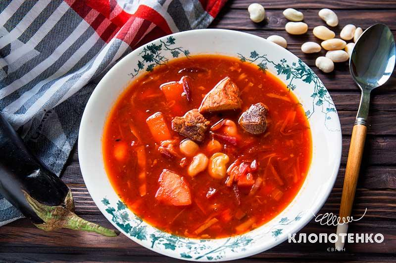
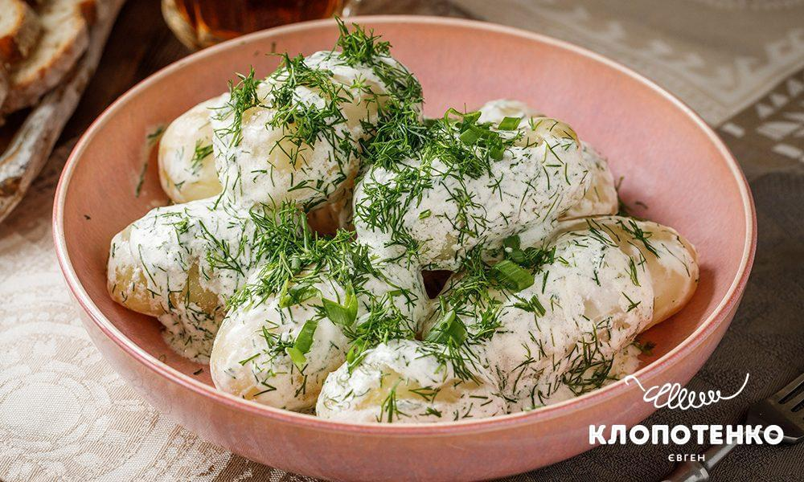
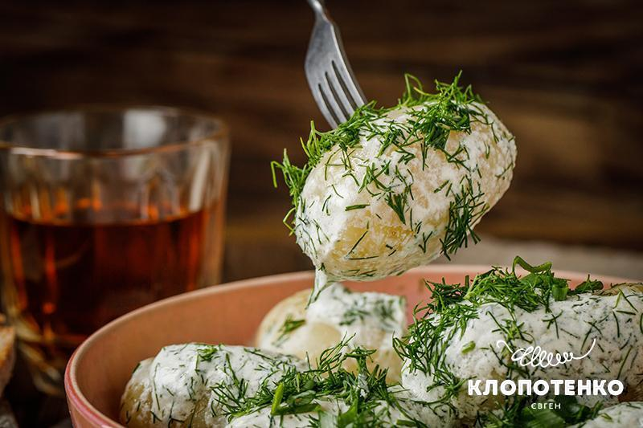

Борщ
Український борщ визнаний UNESCO! Страва увійшла до Списку нематеріальної культурної спадщини цієї авторитетної організації, як така, що потребує термінової охорони. Про цю смачну страву ми готові говорити цілу вічність, а тепер про борщ говоритиме і весь світ. Ми знаємо незліченну кількість неймовірно смачних рецептів борщу і кожен з них унікальний і смакує по-своєму. У світі не існує якогось одного стандартного визнаного рецепта. Проте, у чому ми переконалися остаточно — неабиякого смаку борщу додають традиції чи то окремої родини, чи навіть народу. Здається, це і є головне правило — ця страва несе в собі історію. Тож спробуємо в ній розібратись, а потім і приготувати борщ!
Гетьманський борщ
За часів гетьманату борщ повинен був готуватися зі свинячими ребрами, баклажанами й квасолею. Лише уявіть, який смак дають борщу баклажани і квасоля… Солодкий посмак та приємний аромат цих овочів наповнять вашу кухню. Приготуйте й переконайтесь у цьому!
Ігридієнти
- 2 л води
- 300 г свинячих ребер з м’ясом
- 1 середній буряк
- 2 середні картоплі
- 1 середня цибуля
- 1 моковка
- 150 г баклажану
- 150 г капусти
- 100г квасолі
- 2 ст. л. томатної пасти
- 1 ст. л. цукру
- 2 лаврових листи
- 2 зубчики часнику
- 2 ст. л. соняшникової олії
- сіль, чорний перець та перець горошком — на смак
Приготування
- Помийте та запечіть 1 буряк в духовці протягом 1,5 години. Після чого дайте йому охолонути, очистьте та поріжте соломкою. Або ж можна натерти на грубій терці.
- Залиште на годину 100 г квасолі (якщо у вас не молода) у воді.
- Посоліть 300 г реберець та відправте у духовку з часником, лавровим листом, та перцем горошком на 20 хвилин при 180 градусах. Після чого дайте їм охолонути та розберіть.
- Приготуйте засмажку. Потріть на терці велику моркву, поріжте дрібно середню цибулю, а баклажан — кубиками. Протягом 2-3 хвилин обсмажте цибулю і моркву, згодом додайте буряк і баклажан. Протушкуйте протягом ще 2 хвилин. Після чого додайте томатну пасту і цукор — залиште на малому вогні ще на 2 хвилини.
- Очистьте картоплю і наріжте середніми кубиками. У велику каструлю з водою додайте картоплю та реберця — доведіть до кипіння. А після варіть ще 5 хвилин на меншому вогні.
- Додайте квасолю та нашинковану капусту. Проваріть 15 хвилин. Додайте підготовлену засмажку та проваріть ще 5-7 хвилин. На свій смак посоліть та поперчіть. Наприкінці додайте пюре з двох зубчиків часнику.
Молода картопля зі сметаною та кропом
Відварена молода картопелька — це окреме задоволення. Додайте до неї сметану та зелень для ідеальної літньої страви, що не лише втамує голод, але й створить відчуття затишку та комфорту. Раджу подавати разом з картоплею нарізані свіжі овочі чи легкий овочевий салат. Крім цього ви завжди можете приготувати смажену молоду картоплю з кропом, також за моїм рецептом.
Як перевірити що картопля зварилась?
Дуже просто: проткніть картоплину виделкою або ножем або зубочисткою. Коренеплід повинен бути м’яким та зіслизнути з інструмента.
Що можна додати до молодої картоплі
Часник. З бажанням, натріть 1-2 зубчики часнику та додайте їх до сметани.
Зеленю цибулю. Я використав лише кріп, але молодій картоплі гарно пасуватиме також і молода цибуля.
Спеції. Ви завжди можете додати мелений чорний перець собі до смаку.
Білий йогурт. Якщо з якихось причин ви не хочете використовувати сметану, її можна замінити білим густим йогуртом. Смак буде інакший, адже йогурт має меншу жирність та кислуватий смак, зате він багатий на білок
Ігредієнти
- 700 г молодої картоплі
- 4-6 гілочок кропу
- 30 г вершкового масла
- 100 г сметани
- ½ ч. л. солі
Приготування
- Почистьте 700 г молодої картоплі, зішкрібши тонку шкірку невеликим ножем або чистою металевою губкою.
- Викладіть картоплю в каструлю, залийте водою так, щоб вона повністю покрила коренеплоди та варіть до готовності 25-30 хв в підсоленій воді (½ ч. л. солі).
- Коли картопля звариться, злийте з неї всю воду. викладіть картоплю в миску, додайте 30 г вершкового масла та 100 г сметани.
- Помийте та підсушіть 4-6 гілочок кропу, нашаткуйте зелень, додайте до картоплі зі сметаною та перемішайте.